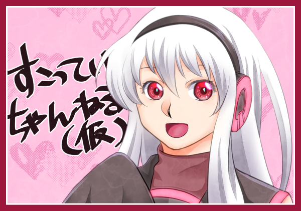

すこっていちゃんねる（仮）
SCOTTEI Channel
- ２ちゃんねるの「高速安価で架空のボーカロイド作ってニコ厨釣ろうぜｗｗｗｗｗｗｗｗ」スレに集まったVIPPERによって作られたキャラクターです。
YAMAHAの商標「VOCALOID」、クリプトン社他のキャラクターボーカルシリーズとは一切関係ありません。
詳細は左からどうぞ。

重要なお知らせ
2014.6.19
クリプトン・フューチャー・メディア株式会社様へ釣りに関する謝罪の文書をお送りいたしました。
詳細は追ってお知らせします。
すこってい/健音テイユーザーの皆様にはご迷惑をおかけしますが、ご理解とご協力をお願いします。
また、この件に関して、クリプトン・フューチャー・メディア株式会社様への問い合わせはしないようお願いします。
2014.06.26
6月20日に、クリプトン・フューチャー・メディア株式会社様よりご返答をいただきました。
すこってい/健音テイの今後の活動に関して問題ない旨の書面を頂戴しました。
迅速なご返答、格別のご高配、感謝申し上げます。
謝罪の文について下記に掲載しました。
釣りによりご不快を感じた皆さまに対して改めて謝罪申し上げます。
すこっていちゃんねる（仮）運営者一同
News
2014.4ニコニコ超会議内 超みんなのUTAUにおいて、すこっていの等身大パネルを展示していただきました。
イラストはpixivで公開しておりUTAU支援中としてご自由に動画にお使いいただけますのでこちらからどうぞ。
更新情報
2014.6.19音源・キャラクターイラスト双方の規約の問い合わせ先を更新しました。
2014.6.19音源班の名称を、他団体と区別するため、「すこってい音源班」としました。